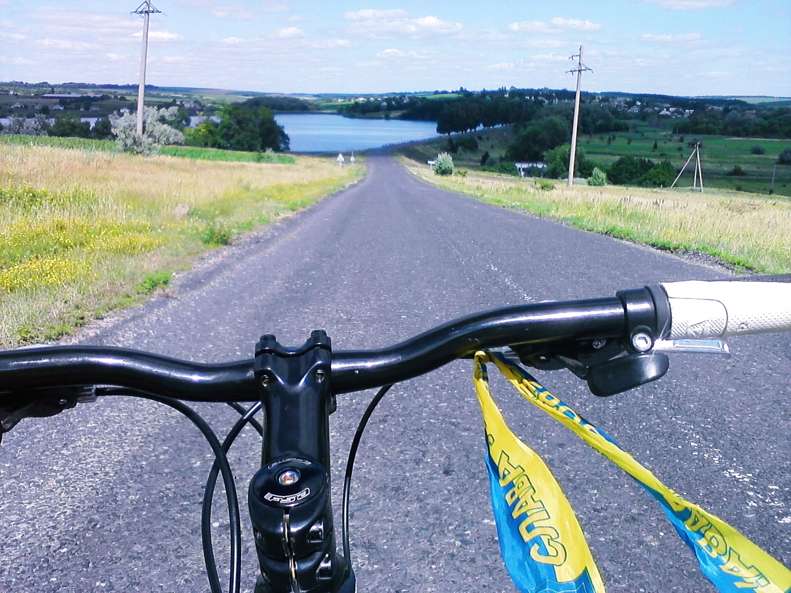

Краєвиди вражають!

| Як ви вже здогадалися, велосипед - не просто моє хоббі, це те, що надихає, змушує рухатися й відкривати нові шляхи. Додати до цього гарну музику - й хочеться їхати і їхати. | Особисто я віддаю перевагу довгим складним маршрутам за містом, серед природи, лісовими стежками, або на узбережжі водосховища. Краєвиди вражають! |
| |
|
|  |